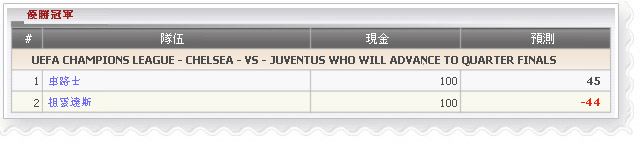

優勝冠軍
定義:
查看代理人的贏金額根據占成數顯示為余額和關於每個代理可能輸預測顯示，如果會員贏得投注金額

優勝冠軍
- 從上述的數字，讓我們聯賽歐洲冠軍聯賽 - 切爾西隊-vs-尤文圖斯誰將推動決賽作為一個例子來理解這個報告。
- 代理總余額根據占成數上可能贏得為切爾西和尤文圖斯 = 100 + 100 = 200
- 1 切爾西: 會員金額 = 200, 代理占成是 50%
--> 余額= 金額* 代理占成 = 200 * 50% = 100
--> 預測= 總余額-金額*賠率*代理占成 = 200 - 200 * 1.55 * 50% =
45
意思指代理會贏 45.
- 2 尤文圖斯: 會員金額= 200, 代理占成是 50%
--> 余額= 金額* 代理占成 =200*50%=100
--> 預測= 總余額-金額*賠率*代理占成 = 200 - 200 * 2.44 * 50% =
- 44
意思指代理會輸 44.